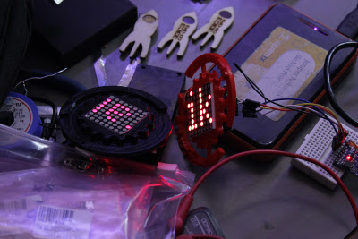
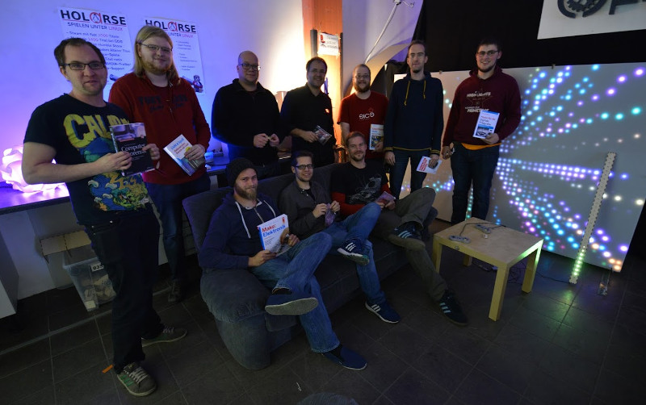

{% block content %}
{% filter markdown|typogrify -%}
Der Hackathon co-op3 fand am Wochenende des 05. + 06. November 2016 in den Räumen des Mainframe statt.
Das Motto lautete: Dein Projekt für den [Kongress - 33C3](https://events.ccc.de/congress/2016/wiki/Main_Page)
Es ging dabei um Projekte, die mit auf den 33C3 gebracht werden können.

Nach dem Start um 16 Uhr am Samstag traten die Teilnehmer mit ihren
Projektideen an. Wie auch bei den vorherigen Hackathon [co-op2][coop2] wurde
mit einem Soft-Opening begonnen. Die Aktivitäten erstreckten sich über die
gesamten Räume des Spaces. Nach einer ersten Vorstellungsrunde wurde sich immer
wieder in regelmäßigen Abständen in der Lounge getroffen um sich über den
Fortschritt und auch die auftretenen Probleme auf dem Weg auszutauschen -
sogenannte "Syncs". Insgesamt nahmen 10 Leute teil und es gab auch spontane
Teilnehmer, die das Event zum Anlass nahmen sich intensiv mit ihren sonstigen
Projekten auseinander zu setzen.
Bei soviel nachdenken und tüfteln durfte Essen natürlich auch nicht fehlen und
so gab es am Samstag Abend Hot-Dogs zu essen (auch vegetarische, Danke!).
Gearbeitet wurde unter anderem an den folgenden Projekten:
* Auslesen von Smartphone-Senoren und Visualisierung mittels ESP8266 und WS2812 LEDs
* Schaltung zur Erkennung der Klingelspannung eines Feldtelefons mit ESP8266 und Weiterleitung an den MQTT Server
* Transportsicherung für das LED-Panel, Verbesserung des Snake Spiels
* Lautstärkepegelanzeige mit Teensy 3.1, Audioshield und WS2812
* Lötdampfabsaugung und blinkender Tannenbaum
* Fading und Blink-Support für I2C Support des Schließsystems
* Visuelle Alarmierung über Wallwasher mit Busprotokoll
* Badge für den Space und Pong mit dem Roboterarm
* Interaktive LED Laufschrift mit WS2812 und ESP8266
Es wurde bis früh in den Morgen an den Projekten gearbeitet. Mehr oder weniger
ausgeschlafen ging es am Sonntag um 14 Uhr nach einem gemeinsamen Frühstück
weiter. Bis zur letzten Minute arbeiteten die Teilnehmer akribisch an ihren
Projekten. Zwischendrin gab es immer mehr zu sehen - alles nahm allmählig
Gestalt an. Bei einem Abschlusstreffen wurden dann die erzielten Ergebnisse
vorgestellt und es kam zur anschließend zu einer Preisverleihung.
Dazu haben uns wieder die Sponsoren [![Oreilly][logo_oreilly]][url_oreilly]
und [![Watterott][logo_watterott]][url_watterott] mit Büchern und Elektronik
unterstützt. Vielen Dank dafür! Unter den Preisen gab es neben Büchern auch
Elektronikbausätze.
Dies war ein guter Ausklang für ein wirklich gelungendes Hackathon-Wochenende.
Vielen Dank an dieser Stelle auch an die Organisatoren Jan Janssen, Oliver
Tonhofer, Michael Pensler!
Wir freuen uns auf den nächsten Hackathon!
Im [Fotoalbum zur Veranstaltung][gallery] gibt es noch mehr Eindrücke von dem Hackathon.

[coop2]: {{ content_url("/events/co-op2.html")|i18n(resource)|dark(resource) }}
[gallery]: {{ "/album.html#/a/0/2016-11_co-op3"|i18n(resource)|dark(resource) }}
[url_oreilly]: http://www.oreilly.de/
[logo_oreilly]: co-op3/logo-oreilly.jpg
[url_watterott]: http://www.watterott.com/
[logo_watterott]: co-op3/logo-watterott.png
{%- endfilter %}
{% endblock content %}